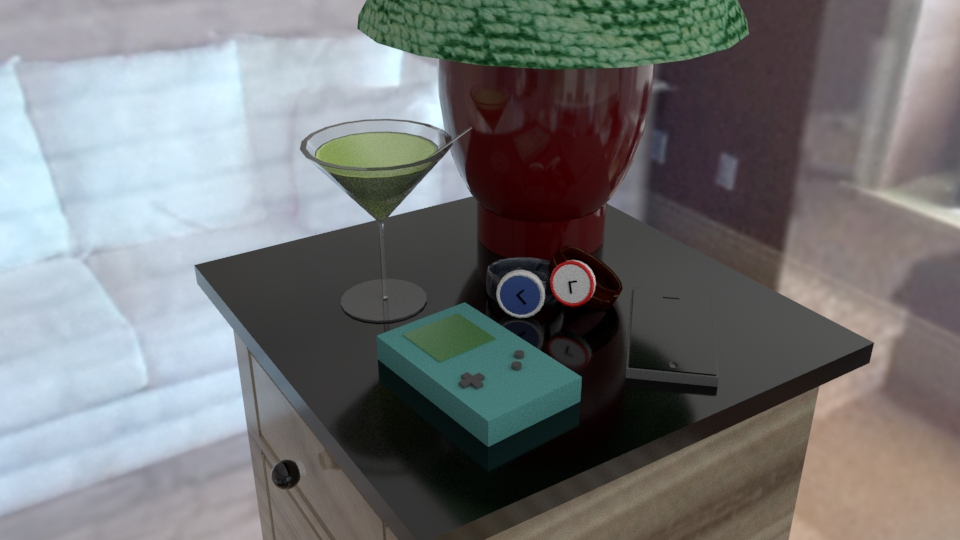

Video

This is a modern still life based on my Ikea nightstand. These are some thngs that I like as well as things that would only appear in every day life in the 21st century. I've got my personal pocket computer/connection to the wealth of all human knowledge. But it's the crappy iPhone 5, so whatever. There's also the gameboy color, a couple watches, and a martini next to my Target lamp. Modern times are defined by our gadgets. This animation makes the still life move in impossible ways. Everything moves by itself and pushes itself catastrophically off the table. This fall would shatter all of these objects, however they float back up to their original positions with ease. These kinds of things are possible in a three-dimensional computer-generated space, but not in reality.